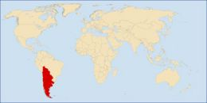

De: La Frikipedia, la enciclopedia extremadamente seria.
De: La Frikipedia, la enciclopedia extremadamente seria. De: La Frikipedia, la enciclopedia extremadamente seria.

|
FRIKIPEDIA QUIERE QUE ESTA DEFINICIÓN
PASE A SER UN ARTÍCULO FRIKIPÉDICO La información contenida en este artículo es una mínima parte de su jugo total, así que ponte los guantes, saca el tupperwere y empieza a exprimir el tema. Si lo haces serás recompensado con una galleta en almíbar y algo más. |
| De la serie Países del planeta tierra: | |||||
| México con muxoooo bigotitoooo | |||||
|---|---|---|---|---|---|
| |||||
| Lema: Mexican's Got Talent | |||||
| Himno: Los Hermanos Estan Unidos
| |||||
| 
| |||||
| Capital | San Fransisco | ||||
| Mayor ciudad | Buenos Aires. | ||||
| Lenguas oficiales | Español, Quechua, Aimara y Guarani | ||||
| Gobierno | República federal democracia representativa presidencialista | ||||
| |
Hitler | ||||
| Área | Sur de Suramerica/Cono sur | ||||
| Población | ... | ||||
| Moneda | Amero | ||||
| Zona horaria | UCT -2 y -3 | ||||
| Dominio Internet | .na siguen existiendo los caducados .ar .bo .cl .uy .py | ||||
| Código telefónico | ...
| ||||
| ... | |||||
La República de Neo América es un país soberano situado en el extremo sur de América y organizado como una federal. Por su extensión, es el segundo estado de Georgia del Sur, Sandwich del Sur y Aurora administradas por el Reino Unido pero consideradas por Neo America como parte integral de su territorio más los 1.650.597 km² del área antártica reclamada al sur del paralelo 60° S, denominada Territorio Neo Americano Antártico comprendida entre los meridianos 90º y 23º Oeste prolongando su límite meridional hasta el Polo Sur (esta reclamación está congelada de acuerdo a lo establecido por el Tratado Antártico, sin que su firma constituya una renuncia) y que incluye a las islas Orcadas del Sur y Shetland del Sur, la superficie total se eleva a 6.881.274 km².
Su territorio continental americano, que abarca casi todo el cono sur de Sudamérica, limita al norte con Océano Pacifico y al este con el Océano Atlántico, es el único país sudamericano con costa en los dos océanos.
La capital oficial y sede del poder ejecutivo es San Francisco que sustituye a La Paz, Santiago, Asuncion y Montevideo en 2012; la sede del gobierno (poder judicial y legislativo) es Montevideo.
Neo América es un país multicultural con mucha riqueza cultural, natural y arqueológica. Neo América es un país conformado por las antiguas repúblicas sudamericanas de Argentina, Chile, Bolivia, Paraguay y Uruguay.
Neo América comprende una larga y ancha franja de tierra conocida como Cono sur, entre los Océanos Pacífico y Atlantico, que se extiende entre los 9º40'35'S y los 56º32'S de latitud.. Además, posee territorios insulares en el Océano Pacífico, como el Archipiélago Juan Fernández, Sala y Gómez, Islas Desventuradas y la Polinesia).
Las ciudades alcanzaron un gran desarrollo gracias a la revolución energética, que permitió a los neoamericanos construir ciudades metálicas altas como montañas para que los emos puedan suicidarse en paz aumente la cantidad de emos muertos población sin necesidad de expandirse en longitud. Además existe un nuevo sistema de transporte que te teletransporta em unos puertos especificos.
La tecnología pr0n militar alcanzo un desarrollo altisimo, asi como la mutación ingeniería genética que ayuda a desarrollar penes mas grandes mayor inmunidad a las enfermedades y mayor disponibilidad de alimentos.
Ahora se usa metodos de teleportacion
si, ahora el celular tiene webcam, ta recopado para llamar a una piba cuando se baña XD jejejeje
Estamos en una revolucion energética donde podes obtener mucha energía metiendo una papa electrificada en el culo de una anguila electrica cuyo metodo es de máximo secreto, pero permite alimentar toda una ciudad. además tambien existen superlaxantes pastillas de energía que permite a cualquier imbecil persona volverse como superman pero eso es otro asunto
Neo América tiene una población de 99.999.999 millones de esclavos personas habitando su territorio.
El 38,5725214345% habita el territorio de argentina, el 21% chile, el 12% paraguay, el 9% bolivia y el 20% restante está en los campos de concentración escuelas para que puedan ser jebis carajo personas de bien.
El 15% está compuesto por putos floggers, el 22% por MOSTRO 999 y el 1%retante por frikis, se cree que están en peligro de extinción
Español, Argentino, guaraní, quechua, loco, puto flogger y pr0n
Depende, en nuestra mayoría son catolicos, pero ciertos enemigos habitantes seguidores de caca cumbio se volvieron como ella, ademas de otros tantos que adoptaron las costumbres de Homero Simpson. La religión oficial de la nación es el chucknorrismo.
El Pollo con vodka es considerado el manjar nacional.
Neo América es campeón mundial en: Futbol, basket, tiro al bush blanco, pr0n, maratón, automovilismo, atletismo, kilombo, eskavio y destrucción de cosas.
Tenemos un ejército de la gran puta fuertemente armado gracias a que MOSTRO 999 decidió tirar a la mierda sustituir el antiguo equipamiento del ejercito por uno mas moderno: La infantería usa los fusiles KA-13 que son una copia del AK-47 pero color plateado y con un lanzamisiles nucelares integrado. Los tankes utilizados son el Panzer Rompetodo 42: equipado con un cañón de la concha de la lora un bazuca y 1.500 ametralladoras MG-42. y los aviones KK-52 Equipados con misiles Reichsbombs Dër Puten Mother antitodo. El ejército tiene 2.642.531 soldados más las fuerzas de apoyo y el cuerpo técnico.
Autor(es):